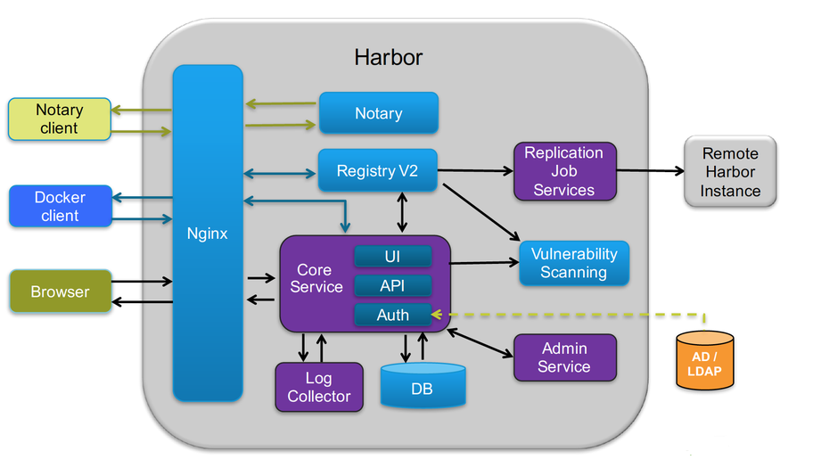

harbor的地址: https://github.com/vmware/harbor/releases
一、harbor的安装
安装harbor的步骤：
- 下载安装docker-compose
- 生成harbor的pem相关文件
- 设置docker证书
- 配置harcfg文件（修改密码，域名，协议[https]等）
- 执行
install.sh进行安装 - 进行验证
接下来，我将准备把harbor部署到192.168.3.6这个节点上。
1. 下载安装docker-compose
pip install docker-compose
wget https://github.com/docker/compose/releases/download/1.24.0/docker-compose-Linux-x86_64
chmod a+x docker-compose-Linux-x86_64
mv docker-compose-Linux-x86_64 /etc/kubernetes/bin/docker-compose
2. 生成harbor的pem相关文件
[root@k8s-master temp]# cat harbor-csr.jso
{
"CN": "harbor",
"hosts": [
"127.0.0.1",
"192.168.3.6"
],
"key": {
"algo": "rsa",
"size": 2048
},
"names": [
{
"C": "CN",
"ST": "BeiJing",
"L": "BeiJing",
"O": "k8s",
"OU": "System"
}
]
}
cfssl gencert -ca=/etc/kubernetes/ssl/ca.pem \
-ca-key=/etc/kubernetes/ssl/ca-key.pem \
-config=/etc/kubernetes/ssl/ca-config.json \
-profile=kubernetes harbor-csr.json | cfssljson -bare harbor
[root@k8s-master temp]# ls -l ha*
-rw-r--r-- 1 root root 1050 Oct 15 14:51 harbor.csr
-rw-r--r-- 1 root root 258 Oct 15 14:49 harbor-csr.json
-rw------- 1 root root 1679 Oct 15 14:51 harbor-key.pem
-rw-r--r-- 1 root root 1419 Oct 15 14:51 harbor.pem
3.设置docker证书
这一步是在配置ssl访问才会有的，把ca.pem放在这个目录中
如果如下目录不存在，请创建，如果有域名请按此格式依次创建
mkdir -p /etc/docker/certs.d/192.168.3.6
# mkdir -p /etc/docker/certs.d/[IP2]
# mkdir -p /etc/docker/certs.d/[example1.com]
如果端口为443，则不需要指定。如果为自定义端口，请指定端口
# /etc/docker/certs.d/yourdomain.com:port
# 将ca根证书依次复制到上述创建的目录中
cp /etckubernetes/ssl/ca.pem /etc/docker/certs.d/192.168.3.6/
4. 配置harcfg文件（修改密码，域名，协议[https]等）
[root@k8s-master harbor]# pwd
/usr/local/src/harbor
[root@k8s-master harbor]# ll
total 854960
drwxr-xr-x 3 root root 23 Oct 15 14:53 common
-rw-r--r-- 1 root root 1185 May 2 23:34 docker-compose.clair.yml
-rw-r--r-- 1 root root 1725 May 2 23:34 docker-compose.notary.yml
-rw-r--r-- 1 root root 3596 May 2 23:34 docker-compose.yml
drwxr-xr-x 3 root root 156 May 2 23:34 ha
-rw-r--r-- 1 root root 6687 May 2 23:34 harbor.cfg
-rw-r--r-- 1 root root 875401338 May 2 23:36 harbor.v1.5.0.tar.gz
-rwxr-xr-x 1 root root 5773 May 2 23:34 install.sh
-rw-r--r-- 1 root root 10771 May 2 23:34 LICENSE
-rw-r--r-- 1 root root 482 May 2 23:34 NOTICE
-rwxr-xr-x 1 root root 27379 May 2 23:34 prepare
修改harbor.cfg中的配置信息，主要是修改密码，域名，协议[https]等
如果要改默认的端口80，那么要改2个地方：
- harbor.cfg中的hostname=192.168.x.x:8888
- docker-compose.yml 对应的ports
prepare
5.执行
install.sh进行安装
[root@k8s-master harbor]# ./install.sh
[Step 0]: checking installation environment ...
Note: docker version: 18.06.1
Note: docker-compose version: 1.23.0
[Step 1]: loading Harbor images ...
...
[Step 2]: preparing environment ...
...
[Step 3]: checking existing instance of Harbor ...
...
[Step 4]: starting Harbor ...
Creating network "harbor_harbor" with the default driver
Creating harbor-log ... done
Creating registry ... done
Creating redis ... done
Creating harbor-adminserver ... done
Creating harbor-db ... done
Creating harbor-ui ... done
Creating harbor-jobservice ... done
Creating nginx ... done
✔ ----Harbor has been installed and started successfully.----
Now you should be able to visit the admin portal at http://192.168.3.6 .
For more details, please visit https://github.com/vmware/harbor .
6. 进行验证
首先进行login登录验证 发现有报错，如下：
[root@k8s-master mysql]# docker login 192.168.3.6
Username: admin
Password:
Error response from daemon: Get https://192.168.3.6/v2/: dial tcp 192.168.3
.6:443: connect: connection refused
原因是安装的时候使用的是http协议，所以需要改成https协议 先关闭harbor
[root@k8s-master harbor]# docker-compose down -v
vi harbor.cfg
修改ui_url_protocol为https
#set ui_url_protocol
ui_url_protocol = https
修改完后prepare，再启动harbor
[root@k8s-master harbor]# vim harbor.cfg
[root@k8s-master harbor]# ./prepare
[root@k8s-master harbor]# docker-compose up -d
Creating network "harbor_harbor" with the default driver
Creating harbor-log ... done
Creating redis ... done
Creating harbor-adminserver ... done
Creating harbor-db ... done
Creating registry ... done
Creating harbor-ui ... done
Creating nginx ... done
Creating harbor-jobservice ... done
再次登录，成功：
[root@k8s-master /]# docker login 192.168.3.6
Username: admin
Password:
WARNING! Your password will be stored unencrypted in /root/.docker/config.json.
Configure a credential helper to remove this warning. See
https://docs.docker.com/engine/reference/commandline/login/#credentials-store
Login Succeeded
注意： 登录成功后，认证信息自动保存到 ~/.docker/config.json 文件
[root@k8s-master 192.168.3.6]# cat ~/.docker/config.json
{
"auths": {
"192.168.3.6": {
"auth": "YWRtaW46U3RhcioyMDE0"
}
},
"HttpHeaders": {
"User-Agent": "Docker-Client/18.06.1-ce (linux)"
}
}
在其他节点同样登录，失败了！！！
[root@k8s-node3 ~]# docker login 192.168.3.6
Authenticating with existing credentials...
Login did not succeed, error: Error response from daemon: Get https://192.168.3.6/v2/: x509: certificate signed by unknown authority
Username (admin): admin
Password:
Error response from daemon: Get https://192.168.3.6/v2/: x509: certificate signed by unknown authority
这个应该是CA证书的问题，网上找了找方法没有解决到。
最终还是使用http协议作为非安全的方式进行访问 ：（ ，修改：
[root@k8s-node3~]# vim /etc/docker/daemon.json
{
"registry-mirrors": ["https://re0o947o.mirror.aliyuncs.com"],
"insecure-registries":["192.168.3.6"]
}
使用ssl的方式留在后面来研究。。。。。。。。。。。。。。。。
通过web端进行登录：

二、harbor使用

1.harbor的业务架构
harbor的业务架构：用户->仓库，其中仓库又分为公共仓库和私有仓库
- 私有仓库需要登录才能有访问的权限
- 公共仓库直接可以进行访问
2.api访问的方式
http：
curl -u "admin:Star*2014" -X GET -H "Content-Type: application/json" "http://192.168.3.6/api/projects/k8spublic"
https：
curl -k --cert /etc/kubernetes/ssl/harbor.pem --key /etc/kubernetes/ssl/harbor-key.pem -X GET -H "Content-Type: application/json" "https://192.168.3.6/api/projects/k8spublic"
3.harbor的生命周期管理
可以使用docker-compose来管理Harbor的生命周期。在harbor的安装目录下，执行相关命令。
docker-compose ps 查看
docker-compose stop 停止
docker-compose start 启动
docker-compose down 删除，利用./install.sh可以重新安装
三、harbor与k8s结合
在docker环境下直接使用,分为三步:
docker login
docker tag
docker push
在k8s中使用harbor分为两种，一种是使用公共仓库的镜像，一种是使用私有仓库的镜像。
1.镜像创建的步骤
- 创建用户
- 创建项目
- 将镜像打标签
docker tag 192.168.3.6/k8spublic/nginx 192.168.3.6/k8sprivate/nginx - 将镜像push到仓库中去
[root@k8s-master ~]# docker push 192.168.3.6/k8sprivate/nginx
拉取镜像对于公共仓库和私有仓库就有区别了：
2.公有仓库的镜像可以直接拉取
参考一个yaml文件的例子：
apiVersion: extensions/v1beta1
kind: Deployment
metadata:
labels:
run: mynginx
name: mynginx
namespace: default
spec:
replicas: 3
selector:
matchLabels:
run: mynginx
template:
metadata:
labels:
run: mynginx
spec:
containers:
- image: 192.168.3.6/k8spublic/nginx
imagePullPolicy: Always
name: mynginx
resources:
requests:
cpu: 100m
terminationMessagePath: /dev/termination-log
terminationMessagePolicy: File
dnsPolicy: ClusterFirst
restartPolicy: Always
schedulerName: default-scheduler
securityContext: {}
terminationGracePeriodSeconds: 30
可以看到镜像是192.168.3.6/k8spublic/nginx，而这个镜像是属于共有仓库的，所以创建pod的时候可以直接被拉取下来。如果镜像是非共有的，那么创建pod的时候，会报错：
[root@k8s-master doc]# kubectl get pod
NAME READY STATUS RESTARTS AGE
mynginx-7f9dc98fd8-49jlk 0/1 ImagePullBackOff 0 5s
mynginx-7f9dc98fd8-lhkqm 0/1 ImagePullBackOff 0 5s
mynginx-7f9dc98fd8-pvzjv 0/1 ImagePullBackOff 0 5s
troublshooting一下：
Events:
Type Reason Age From Message
---- ------ ---- ---- -------
Normal Scheduled 18s default-scheduler Successfully assigned default/mynginx-7f9dc98fd8-49jlk to k8s-node3
Normal BackOff 12s (x2 over 13s) kubelet, k8s-node3 Back-off pulling image "192.168.3.6/k8sprivate/nginx"
Warning Failed 12s (x2 over 13s) kubelet, k8s-node3 Error: ImagePullBackOff
Normal Pulling 1s (x2 over 15s) kubelet, k8s-node3 pulling image "192.168.3.6/k8sprivate/nginx"
Warning Failed 1s (x2 over 15s) kubelet, k8s-node3 Failed to pull image "192.168.3.6/k8sprivate/nginx": rpc error: code = Unknown desc = Error response from daemon: pull access denied for 192.168.3.6/k8sprivate/nginx, repository does not exist or may require 'docker login' Warning Failed 1s (x2 over 15s) kubelet, k8s-node3 Error: ErrImagePull
会有提示报错: pull access denied for 192.168.3.6/k8sprivate/nginx, repository does not exist or may require 'docker login' Warning Failed,这个说明需要先login
3.私有仓库镜的拉取
所以私有仓库镜像在k8s中的正确的拉取方式是：
3.1 首先获取用户名和密码信息，并以base64的方式进行转码
[root@k8s-master doc]# cat /root/.docker/config.json | base64 -w 0
ewoJImF1dGhzIjogewoJCSIxOTIuMTY4LjMuNiI6IHsKCQkJImF1dGgiOiAiWVdSdGFXNDZVM1JoY2lveU1ERTAiCgkJfQoJfSwKCSJIdHRwSGVhZGVycyI6IHsKCQkiVXNlci1BZ2VudCI6ICJEb2NrZXItQ2xpZW50LzE4LjA2LjEtY2UgKGxpbnV4KSIKCX0KfQ==
3.2 然后将harbor的用户名和密码以secret的方式创建
apiVersion: v1
kind: Secret
metadata:
name: harborsecret
data:
.dockerconfigjson: ewoJImF1dGhzIjogewoJCSIxOTIuMTY4LjMuNiI6IHsKCQkJImF1dGgiOiAiWVdSdGFXNDZVM1JoY2lveU1ERTAiCgkJfQoJfSwKCSJIdHRwSGVhZGVycyI6IHsKCQkiVXNlci1BZ2VudCI6ICJEb2NrZXItQ2xpZW50LzE4LjA2LjEtY2UgKGxpbnV4KSIKCX0KfQ==
type: kubernetes.io/dockerconfigjson
3.3 在拉取的时候加上imagePullSecrets
[root@k8s-master doc]# cat deploy-secret.yaml
apiVersion: extensions/v1beta1
kind: Deployment
metadata:
labels:
run: mynginx
name: mynginx
namespace: default
spec:
replicas: 3
selector:
matchLabels:
run: mynginx
template:
metadata:
labels:
run: mynginx
spec:
containers:
- image: 192.168.3.6/k8spublic/nginx
imagePullPolicy: Always
name: mynginx
resources:
requests:
cpu: 100m
terminationMessagePath: /dev/termination-log
terminationMessagePolicy: File
dnsPolicy: ClusterFirst
restartPolicy: Always
schedulerName: default-scheduler
securityContext: {}
terminationGracePeriodSeconds: 30
imagePullSecrets:
- name: harborsecret
注意最后的imagePullSecrets: - name: harborsecret
特别注意,如果harbor配置的是http模式,那么所有节点的/etc/docker/daemon.json配置中都要把harbor的地址加上去。在docker1.13后，默认的模式https!
否则会报类似的错误:
Failed to pull image "192.168.3.6:8888/private/nfs-client-provisioner:latest": rpc error: code = Unknown desc = Error response f
rom daemon: Get https://192.168.3.6:8888/v2/: http: server gave HTTP response to HTTPS client